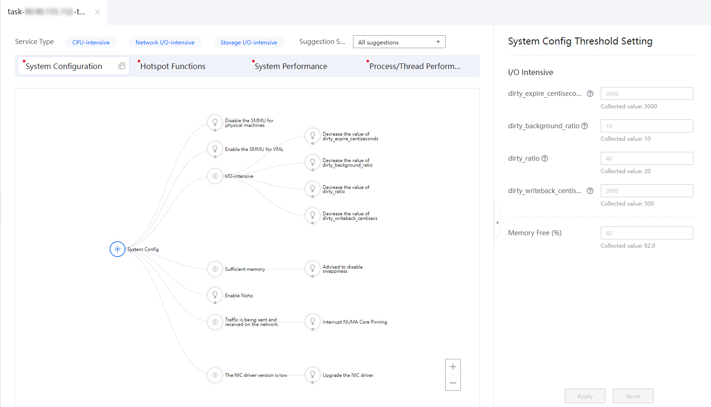
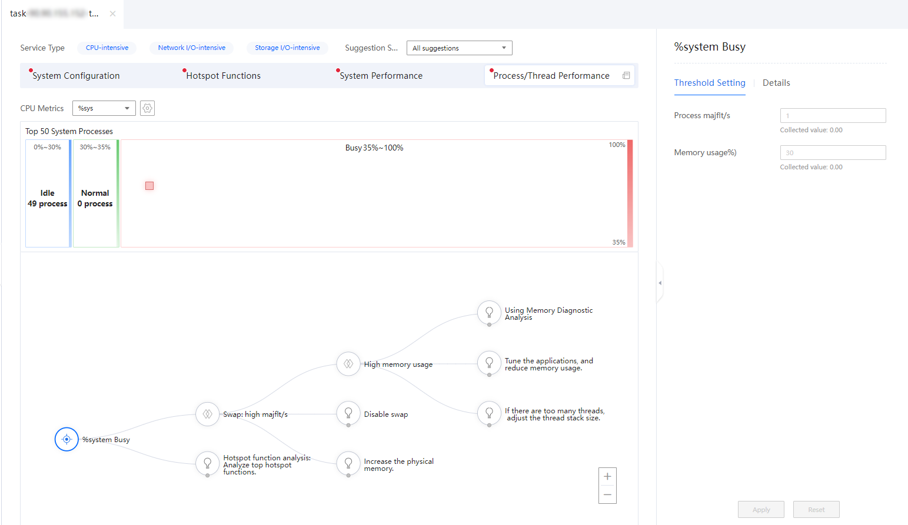
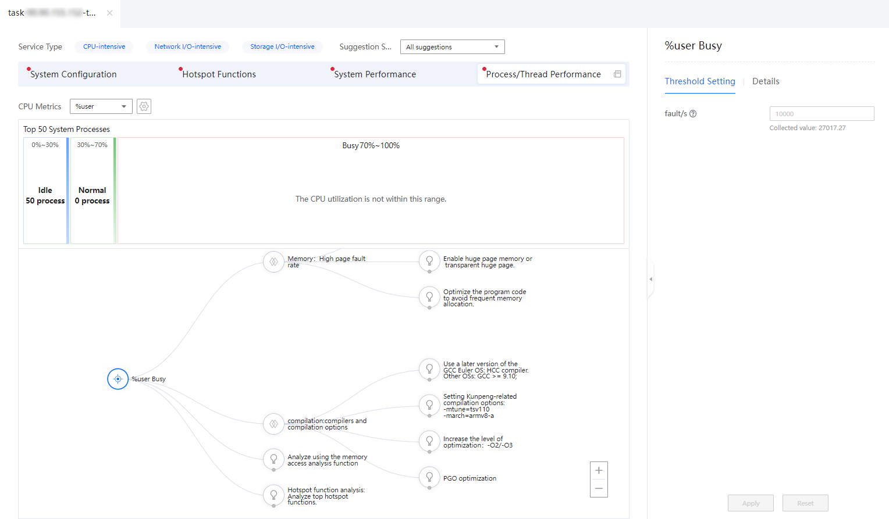
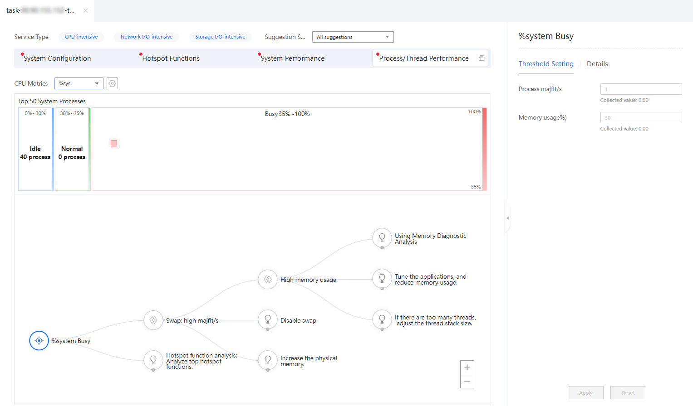
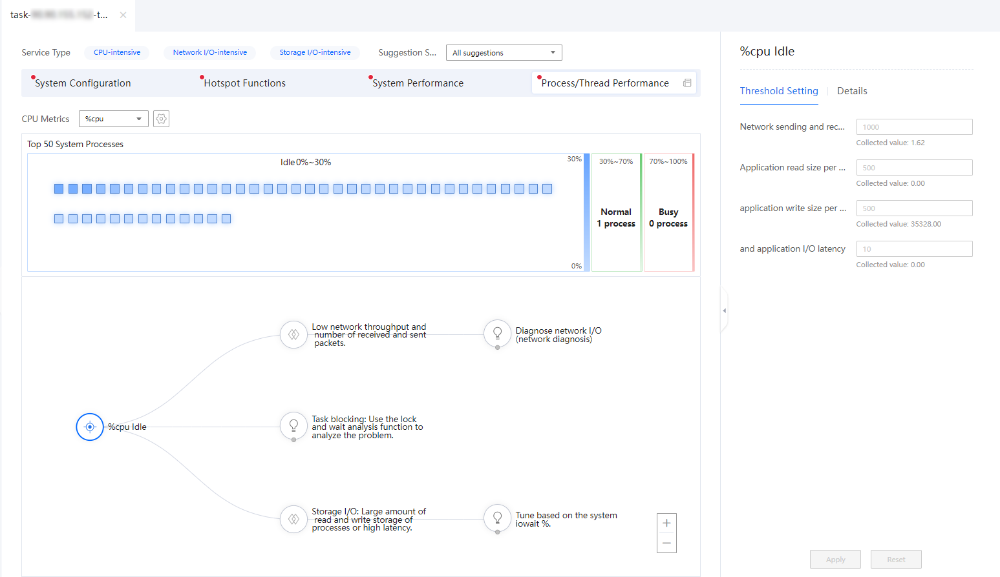
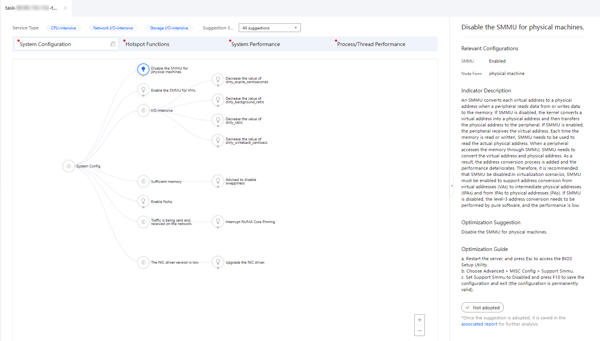
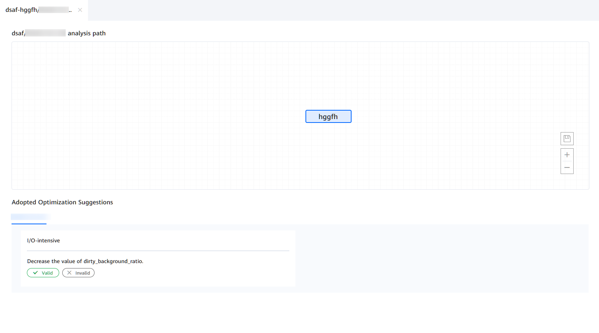
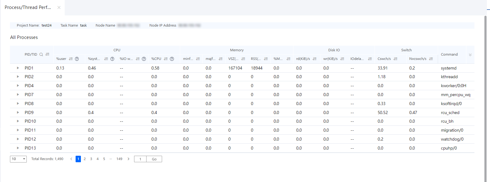

Prerequisites
An analysis task has been created and the analysis is complete.
Procedure
- In the Project Management area, click
 before the target project and analysis task.
before the target project and analysis task.The node list is displayed.
- Click the name of the target node to view the analysis result.
The analysis result page is displayed.
Figure 1 Analysis result page
- Select one or more service types.
- View the process/thread performance analysis result.Figure 3 Process/Thread Performance page
On the Process/Thread Performance page, you can perform the following operations:
- Select a CPU metric from the CPU Metrics drop-down list.
Table 1 lists the optional CPU metrics.
Table 1 CPU metrics CPU Metric
Description
%user
Percentage of CPU time occupied when the system is running in user mode.
%sys
Percentage of CPU time occupied when the system is running in kernel mode. This metric does not include the time spent on service hardware and software interrupts.
%cpu
CPU usage in non-idle state
- Click
 to set the utilization range.In the displayed Utilization Range dialog box, set the start value and end value of the range, and then click OK.Figure 4 Setting the utilization range
to set the utilization range.In the displayed Utilization Range dialog box, set the start value and end value of the range, and then click OK.Figure 4 Setting the utilization range
- Move the mouse cursor over a block to view the performance data of the corresponding CPU core.Figure 5 Viewing the performance data of a CPU core


You can click View related threads to view the threads related to the CPU core (the threads are represented by triangles). In the thread view, you can click PID in the upper left corner to return to the previous page.
- Click a block. In the details area on the right, view the detailed process and thread information about the CPU core, including the microarchitecture metrics, memory access metrics, CPU affinity, memory affinity, operation functions, operation files, operation network ports, and system calls.Figure 6 Viewing the process/thread details of a CPU core

You can click
 to expand the details area.
to expand the details area.
- Select a CPU metric from the CPU Metrics drop-down list.
- View the topology of the process/thread performance tuning suggestions for the CPU core in the Busy state.
- If the CPU metric is set to %user and there are CPU cores in the Busy state, you can set the thresholds of related parameters and view details on the right of the page. The topology of process/thread performance tuning suggestions is displayed in the lower part of the page.Figure 7 Topology of process/thread performance tuning suggestions
Table 2 describes the parameters in the Threshold Setting area.
Table 2 Parameters in the Threshold Setting area Parameter
Description
CPU Affinity
CPU affinity
Memory Affinity
Memory affinity
Concurrency
Concurrency
branch miss rate (%)
Rate of missing CPU running instruction branches. The value is an integer ranging from 1 to 100.
L1-dcache miss rate (%)
L1 data cache miss rate. The value is an integer ranging from 1 to 100.
L1-icache miss rate (%)
L1 instruction cache miss rate. The value is an integer ranging from 1 to 100.
dTLB cache miss rate (%)
Data translation lookaside buffer (TLB) miss rate. The value is an integer ranging from 1 to 100.
iTLB cache miss rate (%)
Instruction TLB miss rate. The value is an integer ranging from 1 to 100.
fault/s
Number of missing pages per second. The value can be any positive integer.
Table 3 describes the main nodes in the topology of process/thread tuning suggestions.
Table 3 Level-1 nodes in the topology of process/thread performance tuning suggestions Node
Description
Switching of process and its threads between different NUMA nodes
During the execution of a process, the process is switched between different NUMA nodes.
Cross-die or cross-chip memory access of processes/threads
The cross-chip or cross-die memory access rate of the CPU is high.
Low concurrency
The number of threads in the process is less than 6.
Branch: high branch miss rate
The number of times that the instruction execution branch is missing is large.
Cache: high cache miss rate
When the arithmetic logic unit (ALU) needs to extract data from the memory, the ALU first searches for the data in the highest-level cache, and then searches for the data in the second-level cache. If data is found in the cache, it is called a hit. Otherwise, it is called a miss.
TLB: high TLB miss rate
If the virtual memory to be accessed is not in the TLB, it is called a TLB miss.
Memory: high page fault rate
The page fault rate of the memory is high.
JVM: high CPU usage by the JVM
The CPU usage of the JVM is too high.
Compilation: compiler and compilation options
Compiler and compilation options.
Memory access capability evaluation: Use the memory access analysis function for analysis.
Analyze the memory access capability.
Hotspot function analysis: top hotspot function analysis.
Analyze the hotspot functions of the system or process.
For each issue listed in Table 3, you can click the node to view problem details and click the next-level node to view the tuning suggestions.
- If the CPU metric is set to %sys and there are CPU cores in the Busy state, you can set the thresholds of related parameters and view details on the right of the page. The topology of process/thread performance tuning suggestions is displayed in the lower part of the page.Figure 8 Topology of process/thread performance tuning suggestions
Table 4 describes the parameters in the Threshold Setting area.
Table 4 Parameters in the Threshold Setting area Parameter
Description
Application context switch
Context switch refers to the process or thread switch performed by the kernel (core of the OS) on the CPU.
Application system call
Two CPU context switches are performed during a system call (user mode - kernel mode - user mode).
Process majflt/s
Number of main page faults per second.
Memory usage (%)
The memory usage exceeds 30%.
Table 5 describes the main nodes in the topology of process/thread tuning suggestions.
Table 5 Level-1 nodes in the topology of process/thread performance tuning suggestions Node
Description
Scheduling overhead: large number of context switches
If the number of context switches is too large, a large number of CPU resources are consumed and the performance deteriorates.
SWAP: high majflt/s
The number of main page faults per second is too high.
Hotspot function analysis: Analyze top hotspot functions.
Analyze the hotspot functions of the system or process.
For each issue listed in Table 5, you can click the node to view problem details and click the next-level node to view the tuning suggestions.
- If the CPU metric is set to %cpu and there are CPU cores in the Busy state, you can set the thresholds of related parameters and view details on the right of the page. The topology of process/thread performance tuning suggestions is displayed in the lower part of the page.Figure 9 Topology of process/thread performance tuning suggestions
Table 6 describes the parameters in the Threshold Setting area.
Table 6 Parameters in the Threshold Setting area Parameter
Description
Average System Calls per Second
Number of times that an application calls system functions per second.
Network sending and receiving throughput
Data volume that passes through a network, channel, or interface in a unit time.
Application Read Size per Second
Data volume read from the drive per second
Application Write Size per Second
Data volume written by a process to a drive per second
Application I/O Latency
Block I/O delay, including the time for waiting for the synchronization block I/O and the swap-in block I/O to end. The unit is clock cycle.
Table 7 describes the main nodes in the topology of process/thread tuning suggestions.
Table 7 Level-1 nodes in the topology of process/thread performance tuning suggestions Node
Description
Task blocking: high blocking system call rate
Blocking system calls can cause performance degradation.
Network I/O: low network sending and receiving throughput and number of received and sent packets
The network sending and receiving throughput and the number of received and sent packets are low.
Task blocking: analyzing using the lock and wait analysis function
Access the system performance analysis page and use lock and wait analysis to locate the performance bottlenecks.
Storage I/O: large process read and write data volume or high latency
The storage capacity of the read and write processes or the latency is high.
For each issue listed in Table 7, you can click the node to view problem details and click the next-level node to view the tuning suggestions.
- If the CPU metric is set to %user and there are CPU cores in the Busy state, you can set the thresholds of related parameters and view details on the right of the page. The topology of process/thread performance tuning suggestions is displayed in the lower part of the page.
- Set tuning parameters based on the tuning suggestion topology.
- View the tuning suggestion topology tree on the analysis result page. Click
 and
and  to select the corresponding tuning suggestions based on the configuration conditions.Figure 10 Tuning suggestions
to select the corresponding tuning suggestions based on the configuration conditions.Figure 10 Tuning suggestions
 - View the Relevant Configurations, Indicator Description, Optimization Suggestion, and Optimization Guide on the right. Click
 to adopt the tuning suggestion, or cancel the adoption of the tuning suggestion by clicking it again.Figure 11 Tuning suggestion page
to adopt the tuning suggestion, or cancel the adoption of the tuning suggestion by clicking it again.Figure 11 Tuning suggestion page
- The adopted tuning suggestions are saved in the associated report. Click the associated report in the lower right corner of the page to access the associated report page.
All adopted tuning suggestions are displayed on the associated report page. You can click the task name to view the details. Click Valid or Invalid in the lower left corner to check whether the tuning suggestion meets the expectation.
Figure 12 Associated report

- View the tuning suggestion topology tree on the analysis result page. Click
- Click
 on the right of Process/Thread Performance to view detailed process/thread performance data.Figure 13 Viewing process/thread performance data
on the right of Process/Thread Performance to view detailed process/thread performance data.Figure 13 Viewing process/thread performance data
